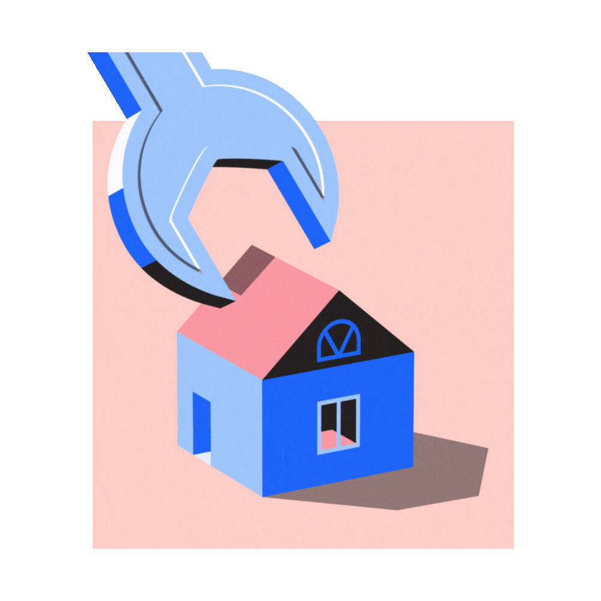

Exemplos de Inovação

Fazendas Inteligentes
Uso de dados em tempo real para irrigação, colheita e previsão de safra.

Energia Sustentável
Painéis solares e biogás promovem eficiência energética no campo e na cidade.

Cidades Inteligentes
Aplicativos de mobilidade, coleta seletiva e agricultura urbana conectam cidade e campo.